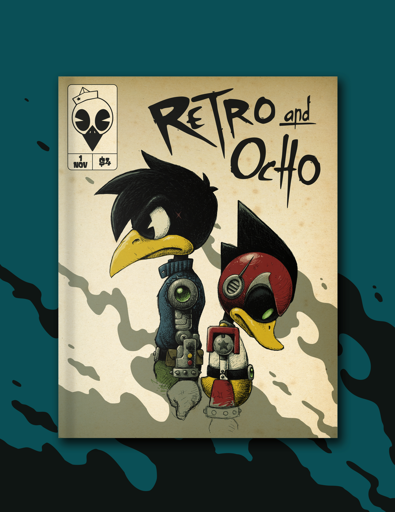
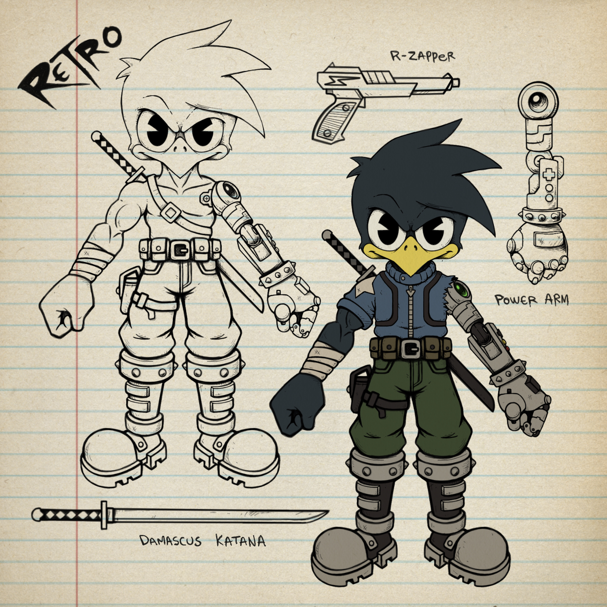
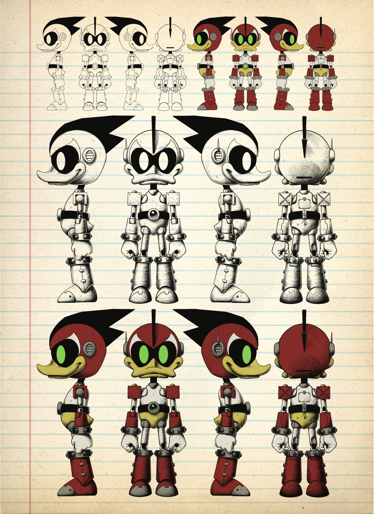

Retro and Ocho
Retro and Ocho is a futuristic cyberpunk sci-fi action-adventure about Retro, a crow bounty/relic hunter navigating a neon-lit world obsessed with technology, money and power. While searching for ancient artifacts buried beneath a hyper-modern society, Retro uncovers something that reveals a hidden truth about his own past one he wishes had remained lost forever. During this discovery, Retro unexpectedly gains a companion: Ocho, a robot duck never meant to exist in this era. Driven by curiosity and wonder, Ocho searches for meaning in a world where he technically doesn’t belong, embracing life with optimism and fascination. His hopeful outlook stands in sharp contrast to Retro, whose monotonous existence and unsettling revelations push him to question his identity, memories, and even reality itself. As the two travel through a dangerous cyberpunk future filled with Corruption, mystery, and adventure, Retro and Ocho becomes a story about identity, purpose, and what it means to be alive

Character Design
Much of my character design is influenced by my love of retro video games and cartoons, with a strong focus on creating characters that translate well into action figures.

